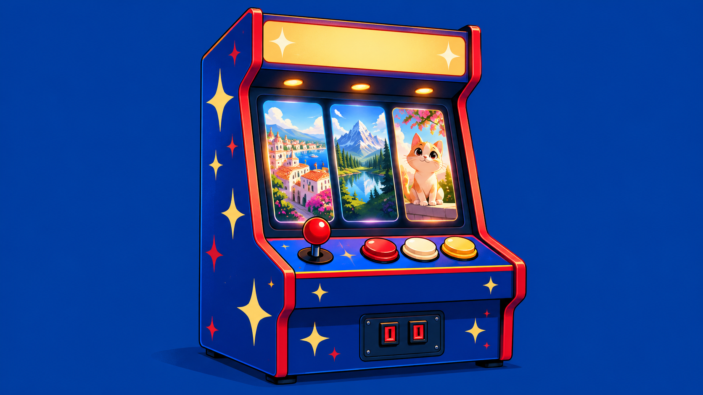

Drop an idea
Start with a topic, a question, or a story you want to tell.
✦ IDEAS IN. STORIES OUT. ✦
Big ideas deserve a little screen time. Turn yours into animated shorts with a little help from AI.
✳ NO CAMERA. NO CREW. JUST YOUR IMAGINATION.

✦✧01 / THE GAME PLAN
You bring the spark. ShortClipr is designed to help turn it into a story ready for the screen.
Start with a topic, a question, or a story you want to tell.
Choose a clip type and give your idea its own visual personality.
Let the creative workflow bring together animation, narration, and sound.
Review your finished short and get it ready to share.
A look at the intended ShortClipr experience. Product capabilities are in development.
02 / PICK YOUR GAME
One idea machine. A whole universe of stories to make.
Make the complicated click.
Put ideas head to head.
Give curiosity a challenge.
Little worlds, big feelings.
Take the long way out.
Put a story on the map.
AND THERE'S MORE TO EXPLORE ✦ MYSTERY ✦ RECIPES ✦ WHAT-IFS ✦ ANIMATED CONVERSATIONS
03 / CHOOSE YOUR LOOK
A story can take a thousand shapes. Explore a few visual directions imagined for ShortClipr.
04 / FROM SPARK TO SCREEN
Start with a question, a story, or the idea you can’t stop thinking about. Pick the direction. Let the story unfold.
More about ShortClipr ↗“What would happen if the moon disappeared?”
05 / MADE TO FIT
Think beyond one frame. The planned experience supports multiple layouts for wherever your story belongs.
06 / GOOD TO KNOW
Everything starts somewhere. Here’s a little more about the ShortClipr vision.
ShortClipr is an AI-assisted platform being designed to help creators turn ideas into animated short-form videos.
No. ShortClipr is designed around faceless animated storytelling, so the idea can take center stage.
The planned clip types include explainers, comparisons, quizzes, mini stories, maps, mystery, recipes, and more.
The current product plan supports clips up to 60 seconds, across vertical, square, and widescreen formats.
This page previews the product direction. Features, availability, and final details may change as ShortClipr is built.
READY, PLAYER ONE?
The best stories start with a little curiosity. What will you make?
Back to the top ↑✳